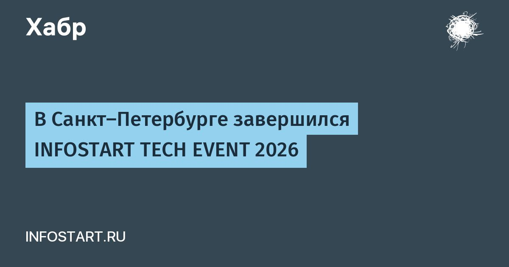

В Санкт-Петербурге завершился INFOSTART TECH EVENT 2026
8–10 октября в отеле «Санкт-Петербург» прошла INFOSTART TECH EVENT 2026 - профессиональная техническая конференция для специалистов по 1С и автоматизации бизнеса.
Три дня докладов, дискуссий и демонстраций были посвящены развитию корпоративных систем: от применения ИИ в разработке и тестировании до архитектуры, интеграций и производительности.
Программу дополнили оформление в стиле тёмного фэнтези и INFOSTART PARTY.
Участники отмечали высокий уровень организации конференции.Программа включала более 130 докладов и круглых столов.
Основные направления охватывали приёмы и практики разработки, идеи и технологические тренды, интеграцию и обмен данными, администрирование СУБД и HighLoad, DevOps, тестирование и качество ПО, техническое развитие команды и личную эффективность разработчика.
Такой состав позволял рассматривать задачи автоматизации вместе с требованиями к качеству, инфраструктуре и организации работы.
Читать далее